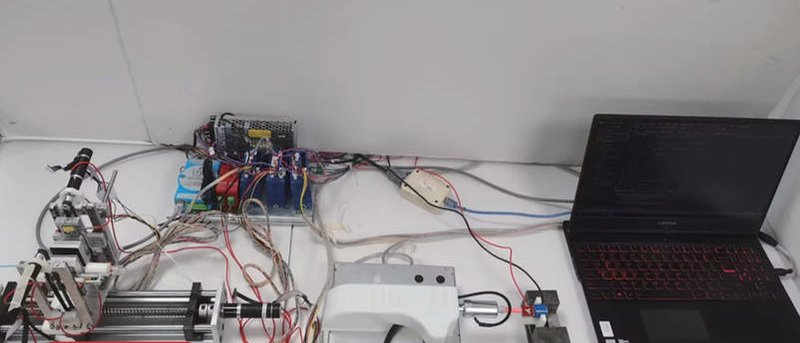

Academic bedside robots · sia_zhang2025
SIA finger-twist robot
SIA master-slave vascular interventional robot with bionic finger-twisting guidewire mechanism

1 / 12


- Family
- Academic bedside robots (academic)
- Devices
- guidewire (twisted and advanced) and catheter (clamped by a solenoid valve) (zhang2025_obstruction Sec. IV-A)
- Degrees of freedom
- 2 (axial delivery + rotation; displacement and rotation-angle mapping, zhang2025_obstruction Sec. III)
- Push
- Linear stage
- Twist
- Rolling between rollers
- Tested up to
- Phantom
- Sim-to-real
- None found — No simulation-trained controller found for this robot.
Testing
- Highest level
- Phantom
- What was tested
- 40 interventions in a vascular model; occlusion detected in 36 (zhang2025_obstruction Sec. IV-B)
- Key numbers
- occlusion detection 90% (36/40); axial force RMSE 414.15 mN; radial torque error 1.01 N·m as printed (torque traces are in mN·m); sampling 1 kHz (zhang2025_obstruction Abstract, Sec. IV-A)
Mechanism
- Push (translation)
- linear-stage+clamp
- Twist (rotation)
- other: bionic finger twisting mechanism
- Device range
- N.R.
- Target anatomy
- N.R. (vascular model with 4 branch regions)
Sensing and interface
- Force sensing
- proximal: two force sensors on the twisting mechanism for axial force and radial torque (zhang2025_obstruction Sec. II-A)
- Leader and haptics
- master handle with two motors and high-precision encoders rendering axial force and radial torque (zhang2025_obstruction Sec. II-A)
- Imaging
- N.R.
- Sterility
- N.R.
Size
- Footprint (mm)
- N.R.
- Mass (kg)
- N.R.
Simulation
- Simulation model
- none found
- Sim-trained controller
- none found
Versions
- Lineage
- 2022 master manipulator with force feedback (li2022_design, title/affiliations); 2025 slave with bionic finger twisting mechanism + force-based occlusion detection (zhang2025_obstruction, full); 2024: SIA (Hao Liu, Peng Lin) flexible-belt constrained catheterization robot: guidewire in a lumen of two magnet-joined belts pulled by friction rollers, rear-end clamp twists, bench delivery error <= 1.5 mm at 75-125 mm belt spacing (Tian 2024 ICMA; Alekseeva 2025 Table 10 row 4, Fig. 11e) (tian2024_flexbelt; alekseeva2025_design); 2017: SIA (A. Gao, H. Liu) with the General Hospital of Shenyang Command, contact-aided asymmetric tendon-driven ablation catheter (2.6 mm): tendons pulled by a motorised lead screw for the bench bending tests, left-atrium phantom reached by manual tendon, rotation and insertion (Gao 2017 RA-L) (Alekseeva 2025 Table 14 row 7) (gao2017_contactaided; alekseeva2025_design)
Sources
- Obstruction Detection for Robotic Assisted Vascular Intervention · 2025 IEEE International Conference on Real-time Computing and Robotics (RCAR), 2025 · doi:10.1109/rcar65431.2025.11139717 [zhang2025_obstruction]
- Design and experimental verification of a novel master manipulator with force feedback for vascular interventional robot · 2022 IEEE International Conference on Robotics and Biomimetics (ROBIO), 2022 · doi:10.1109/robio55434.2022.10011933 [li2022_design]
- Flexible Belt Constrained Catheterization Robot · 2024 IEEE International Conference on Mechatronics and Automation (ICMA), 2024 · doi:10.1109/ICMA61710.2024.10633087 [tian2024_flexbelt]
- The Design of Endovascular Robots for Cardiac Interventions: A Survey · Journal of Field Robotics, 2024 · doi:10.1002/rob.22480 [alekseeva2025_design]
- A Contact-Aided Asymmetric Steerable Catheter for Atrial Fibrillation Ablation · IEEE Robotics and Automation Letters, 2017 · doi:10.1109/lra.2017.2676351 [gao2017_contactaided]
Notes
- Notes
- Bench photo of a lab prototype; no product-like housing.
This record
- Read level
- full — full (zhang2025_obstruction); title/affiliations (li2022_design)
- Picture
- zhang2025_obstruction Fig. 5 experimental platform (native raster p. 5) ↗ — licence: publisher copyright; grade C
- Picture changes
- native extract; cropped above red text labels; not upscaled
- Found by
- gap: Gap searches for robots the other searches missed.
- Data
- JSON · YAML:
records/robots/sia_zhang2025.yaml - Correction
- Suggest a correction [repository not created yet]